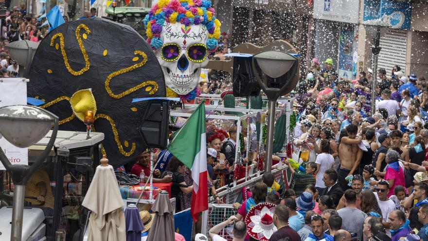
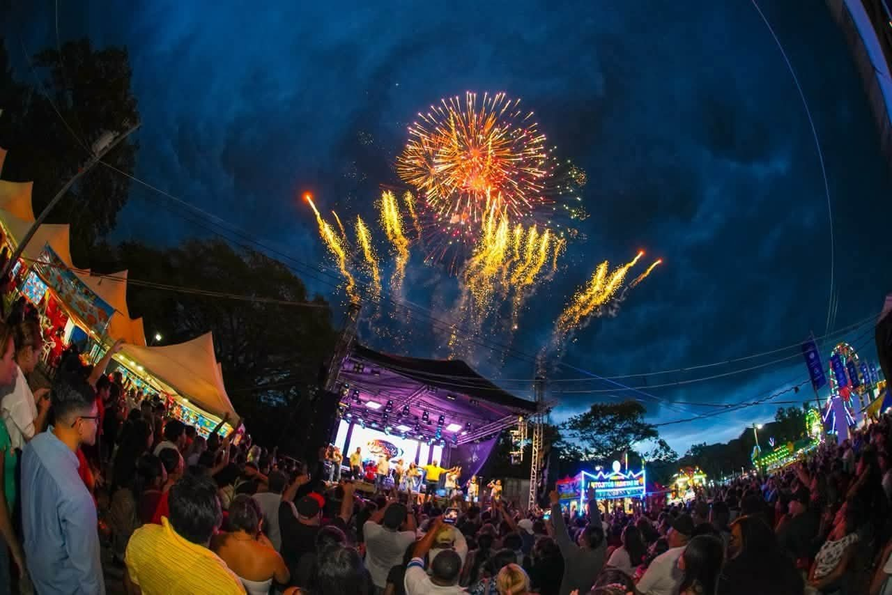
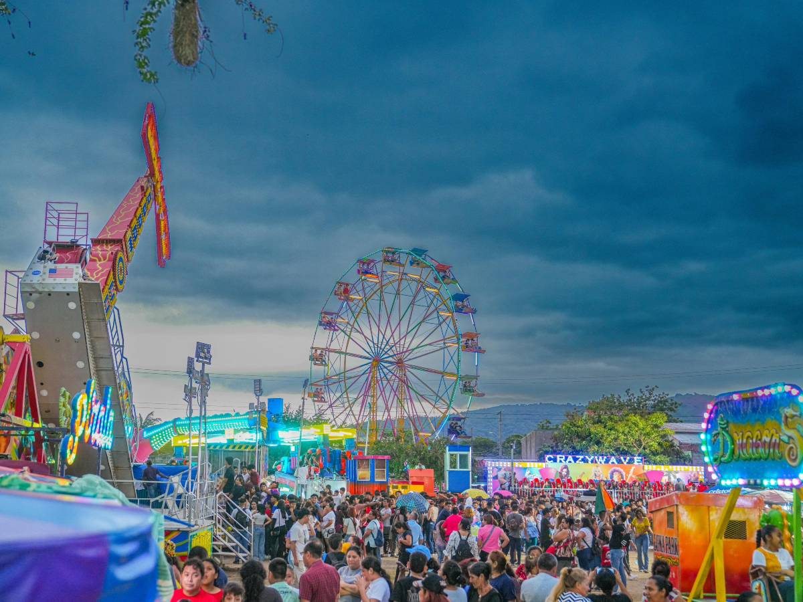

Desfile de carrozas
Los desfiles de carrozas son una de las actividades más esperadas de las Fiestas Julias. Se caracterizan por sus coloridas decoraciones, música y participación de diferentes comunidades de Santa Ana.

Las Fiestas Julias son una de las celebraciones tradicionales más importantes de Santa Ana, El Salvador. Se realizan en honor a la Señora Santa Ana, patrona de la ciudad, durante el mes de julio. Estas fiestas reúnen actividades religiosas, culturales y recreativas que permiten a las familias y visitantes disfrutar de las tradiciones santanecas.

Conoce algunas de las actividades que forman parte de esta tradicional celebración de Santa Ana.
Los desfiles de carrozas son una de las actividades más esperadas de las Fiestas Julias. Se caracterizan por sus coloridas decoraciones, música y participación de diferentes comunidades de Santa Ana.

Durante las fiestas se desarrollan actividades recreativas, música, bailes y eventos para toda la familia. El ambiente festivo reúne a habitantes y visitantes que disfrutan de la alegría santaneca.

Las actividades religiosas son una parte importante de las Fiestas Julias. Se realizan misas, oraciones y celebraciones en honor a la Señora Santa Ana, patrona de la ciudad.
Santa Ana cuenta con diferentes espacios donde se desarrollan actividades religiosas, culturales y recreativas durante las fiestas.
La Catedral de Santa Ana es uno de los principales lugares relacionados con las celebraciones religiosas de las Fiestas Julias y un importante símbolo de la ciudad.
Ubicación: Santa Ana, El Salvador
📍 Ver ubicación
El Parque Libertad es uno de los espacios más representativos del centro histórico de Santa Ana. Es un lugar ideal para disfrutar del ambiente cultural y tradicional de la ciudad.
Ubicación: Centro Histórico de Santa Ana, El Salvador
📍 Ver ubicación
Durante las Fiestas Julias se habilitan espacios para disfrutar de juegos mecánicos, comida, actividades familiares y diferentes atracciones que forman parte del ambiente festivo de Santa Ana.
Ubicación: Santa Ana, El Salvador
📍 Ver ubicaciónElige el día del evento, selecciona una tour operadora, un guía o el transporte, indica el número de personas y agrega tu reserva al carrito.
Días de feria ganadera, desfiles y ambiente festivo en Santa Ana. Elige el día que prefieras.
Visita guiada a la feria y ubicación en un buen punto para ver las carrozas, la música y los personajes tradicionales.
$20 por persona
Recorrido por el Parque Libertad, la Catedral y los alrededores durante las fiestas.
$25 por grupo

Viaje de ida y vuelta a Santa Ana, con salida por la mañana.
$10 por persona
Día de la patrona de la ciudad, con mañanitas, misa patronal y procesión por la tarde.
Acompañamiento durante los actos del día principal, desde la madrugada hasta la procesión.
$25 por persona
Explicación de la historia de la Catedral y de las tradiciones en honor a la Señora Santa Ana.
$30 por grupo

Vehículo con conductor para llegar temprano a las mañanitas y regresar después de la procesión.
$50 por vehículo